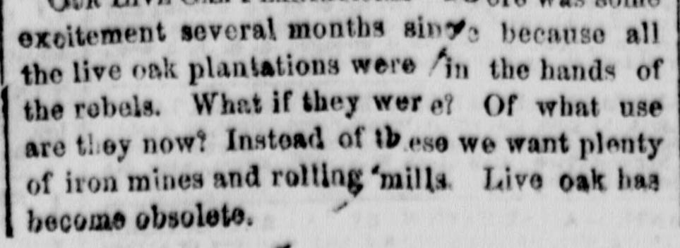

Important From WashingtonImportante desde Washington
The New York Herald. New York [N.Y.], April 25, 1862. Page 4. Also published as the New York Daily Herald. Published by James Gordon Bennett. A daily newspaper, 1840–1920.The New York Herald. New York [N.Y.], 25 de abril de 1862. Página 4. También publicado como New York Daily Herald. Publicado por James Gordon Bennett. Periódico diario, 1840–1920. View the originalVer el original

On April 24, 1862, the Senate unanimously ratified the Seward-Lyons treaty for the suppression of the African slave trade and passed a bill recognizing Hayti and Liberia. Additionally, French Minister M. Mercier returned to Washington from Richmond, visited the State Department to confer with Secretary Seward, and stated that his visit to Richmond was not of political importance and that he had never heard of Dr. Lemoine prior to his arrival.El 24 de abril de 1862, el Senado ratificó por unanimidad el tratado Seward-Lyons para la supresión de la trata transatlántica de esclavos y aprobó un proyecto de ley que reconocía a Haití y a Liberia. Además, el ministro francés M. Mercier regresó a Washington procedente de Richmond, acudió al Departamento de Estado para conferenciar con el secretario Seward y declaró que su visita a Richmond carecía de trascendencia política, asegurando que jamás había oído hablar del Dr. Lemoine con anterioridad a su llegada.
FULL TEXT:TEXTO COMPLETO:
The New York Herald April 25, 186225 de abril de 1862
Original in English.Original en inglés.
Important From WashingtonNoticias importantes de Washington
Ratification of the Seward-Lyons TreatyRatificación del Tratado Seward-Lyons
for Suppressing the Africanpara la supresión de la trata
Slave Trade.de esclavos africanos.
The Bill Recognizing Hayti and LiberiaEl proyecto de ley que reconoce a Haití y Liberia
Passed by the Senate.aprobado por el Senado.
Interesting Debates in Congress onInteresantes debates en el Congreso sobre
the Confiscation Question.la cuestión de la confiscación.
The Object of the French Minister'sEl objeto de la visita del ministro francés
Visit to Richmond.a Richmond.
Difficulty Between Mr. VallandighamDificultades entre el Sr. Vallandigham
and Senator Wade.y el senador Wade.
Mr. Wade Stigmatized as a Liar, a Scoundrel and a Coward,El Sr. Wade tildado de mentiroso, canalla y cobarde,
&c., &c., &c.etc., etc., etc.
WASHINGTON, April 24, 1862.WASHINGTON, 24 de abril de 1862.
RATIFICATION OF THE SEWARD-LYONS TREATY FOR THE SUPPRESSION OF THE AFRICAN SLAVE TRADE.RATIFICACIÓN DEL TRATADO SEWARD-LYONS PARA LA SUPRESIÓN DE LA TRATA DE ESCLAVOS AFRICANOS.
The Senate to-day, by a unanimous vote, ratified the Seward-Lyons treaty recently negotiated here for the suppression of the African slave trade. This is deemed a most important treaty, which will probably sweep the last vestige of the piratical traffic from the face of the seas.El Senado ha ratificado hoy, por votación unánime, el tratado Seward-Lyons negociado recientemente aquí para la supresión de la trata de esclavos africanos. Este se considera un tratado sumamente importante, que probablemente barrerá el último vestigio del tráfico pirata de la faz de los mares.
RETURN OF THE FRENCH MINISTER FROM RICHMOND.REGRESO DEL MINISTRO FRANCÉS DE RICHMOND.
a most important treaty, which will probably sweep the last vestige of the piratical traffic from the face of the seas.un tratado sumamente importante, que probablemente barrerá el último vestigio del tráfico pirata de la faz de los mares.
RETURN OF THE FRENCH MINISTER FROM RICHMOND.REGRESO DEL MINISTRO FRANCÉS DE RICHMOND.
The French Minister, M. Henri Mercier, returned to-day in the frigate Gassendi from Richmond. Soon after his arrival he visited the State Department, and had a long and doubtless interesting interview with Secretary Seward. M. Mercier states that he never heard until his arrival here of Dr. Lemoine, who is said, by the Richmond papers, to have represented thirty thousand Frenchmen.El ministro francés, M. Henri Mercier, regresó hoy de Richmond en la fragata Gassendi. Poco después de su llegada visitó el Departamento de Estado y mantuvo una larga y sin duda interesante entrevista con el secretario Seward. M. Mercier afirma que nunca oyó hablar, hasta su llegada aquí, del Dr. Lemoine, de quien los periódicos de Richmond dicen que representaba a treinta mil franceses.
M. Mercier's visit to Richmond was not of political importance, but, as stated in the HERALD some time ago, was purely of a business character, in reference to the safety of a large amount of property belonging to the French government, which was in danger of being burned or destroyed by the vandals of the rebel confederacy when they shall be compelled to evacuate Richmond.La visita de M. Mercier a Richmond no tuvo importancia política, sino que, tal como indicó el HERALD hace algún tiempo, fue de carácter puramente comercial, en relación con la seguridad de una gran cantidad de bienes pertenecientes al gobierno francés, que corrían el peligro de ser incendiados o destruidos por los vándalos de la confederación rebelde cuando se vean obligados a evacuar Richmond.
THE CORRESPONDENCE WITH FRANCE RELATIVE TO THE WAR.LA CORRESPONDENCIA CON FRANCIA RELATIVA A LA GUERRA.
Mr. Vallandigham's resolution calling upon the President for such correspondence between this government and France as may have been received within the last two months, was based upon the knowledge of the fact, that the French government, supposing that it had been assured that the rebellion should be crushed out within a given time, which is already past, has made some very significant inquiries of our government upon that subject.La resolución del Sr. Vallandigham en la que solicita al Presidente la correspondencia entre este gobierno y Francia que pueda haberse recibido en los últimos dos meses, se basó en el conocimiento del hecho de que el gobierno francés, al suponer que se le había asegurado que la rebelión sería aplastada dentro de un plazo determinado, que ya ha pasado, ha hecho algunas indagaciones muy significativas a nuestro gobierno sobre ese asunto.
THE REPUBLICAN CAUCUS.EL CAUCUS REPUBLICANO.
The object of the caucus last night was to arrange the details of a Confiscation bill that would command the full vote of the republican party in the House. It was informally determined that the bill to be presented should affix the penalty of confiscation only to those who have been actually bearing arms against the United States, excluding all who may be able to prove that they were involuntarily in arms. The only objection urged against the proposed bill is its incompatibility with the express provisions of the constitution. This bill will unquestionably be passed, but the Supreme Court will probably confine its operation to the life estate of rebels convictedEl objetivo del caucus de anoche era coordinar los detalles de un proyecto de ley de confiscación que contara con el voto pleno del partido republicano en la Cámara. Se determinó de manera informal que el proyecto de ley que se presentará debería imponer la pena de confiscación solo a aquellos que hayan empuñado efectivamente las armas contra los Estados Unidos, excluyendo a todos los que puedan demostrar que estaban involuntariamente en armas. La única objeción esgrimida contra el proyecto de ley propuesto es su incompatibilidad con las disposiciones expresas de la constitución. Este proyecto de ley se aprobará sin duda alguna, pero el Tribunal Supremo probablemente limitará su aplicación al usufructo vitalicio de los rebeldes condenados
the proposed bill is its incompatibility with the express provisions of the constitution. This bill will unquestionably be passed, but the Supreme Court will probably confine its operation to the life estate of rebels convicted under it.el proyecto de ley propuesto es su incompatibilidad con las disposiciones expresas de la constitución. Este proyecto de ley se aprobará sin duda alguna, pero el Tribunal Supremo probablemente limitará su aplicación al usufructo vitalicio de los rebeldes condenados en virtud de este.
LOVEJOY'S HARANGUE ON THE CONFISCATION QUESTION.LA ARENGA DE LOVEJOY SOBRE LA CUESTIÓN DE LA CONFISCACIÓN.
Hon. Owen Lovejoy's speech upon confiscation to day, although toned down as much as possible under the advice of his friends, proclaimed boldly the doctrine of the radicals, that either slavery or the Union must be destroyed in this war. He said that either slavery or the republic must perish. It is certain that the confiscation bill will be modified so as to reach only the property of the leaders in the rebellion. The majority in the House will go no farther than this.El discurso del honorable Owen Lovejoy sobre la confiscación pronunciado hoy, aunque atenuado en la medida de lo posible por consejo de sus amigos, proclamó con audacia la doctrina de los radicales de que o bien la esclavitud o bien la Unión deben ser destruidas en esta guerra. Dijo que o bien la esclavitud o bien la república deben perecer. Es seguro que el proyecto de ley de confiscación será modificado para alcanzar únicamente las propiedades de los líderes de la rebelión. La mayoría de la Cámara no irá más allá de esto.
THE EMANCIPATION COMMISSION COMPLETED.COMPLETADA LA COMISIÓN DE EMANCIPACIÓN.
The appointment of Horatio King, ex-Postmaster General, as one of the Commissioners under the act for the abolishment of slavery in the District of Columbia, was confirmed by the Senate to-day. The Board will organize at once.El nombramiento de Horatio King, exdirector general de Correos, como uno de los comisionados bajo la ley para la abolición de la esclavitud en el Distrito de Columbia, fue confirmado hoy por el Senado. La Junta se organizará de inmediato.
The assault upon the President, in connection with the appointment of Mr. King, however gratifying to the radicals who are waging war against the administration, is severely condemned by all who appreciate the patriotism exhibited by the few who were called to the rescue of the country during the last days of the Buchanan dynasty. The four gentlemen mentioned in the correspondence of the Times as unworthy of public favor, on account of their connection with the administration of Mr. Buchanan, were precisely those whose efforts were relied upon by the whole nation in a most trying hour to save the country from the ruin invoked by the previous management of public affairs. It was their conduct upon that occasion that commended them to the people and to President Lincoln. The nomination of Mr. King, however, was not prompted by the Secretary of War. He was selected by the President himself, as a man of known integrity and enjoying the confidence of the people of the District, and therefore eminently proper as one of these Commissioners. These facts induced theEl ataque contra el Presidente, en relación con el nombramiento del Sr. King, por muy grato que resulte a los radicales que libran una guerra contra la administración, es severamente condenado por todos aquellos que aprecian el patriotismo demostrado por los pocos que fueron llamados al rescate de la patria durante los últimos días de la dinastía de Buchanan. Los cuatro caballeros mencionados en la correspondencia del Times como indignos del favor público, a causa de sus vínculos con la administración del Sr. Buchanan, fueron precisamente aquellos en cuyos esfuerzos confió toda la nación en una hora dificilísima para salvar al país de la ruina provocada por la gestión previa de los asuntos públicos. Fue su conducta en aquella ocasión la que los hizo merecedores del aprecio del pueblo y del presidente Lincoln. El nombramiento del Sr. King, sin embargo, no fue impulsado por el secretario de Guerra. Fue seleccionado por el propio Presidente como un hombre de reconocida integridad y que goza de la confianza de los habitantes del Distrito y, por lo tanto, sumamente apropiado como uno de estos comisionados. Estos hechos indujeron la
of War. He was selected by the President himself, as a man of known integrity and enjoying the confidence of the people of the District, and therefore eminently proper as one of these Commissioners. These facts induced the prompt confirmation of the appointment by the Senate.de Guerra. Fue seleccionado por el propio Presidente como un hombre de reconocida integridad y que goza de la confianza de los habitantes del Distrito y, por lo tanto, sumamente apropiado como uno de estos comisionados. Estos hechos indujeron la pronta confirmación del nombramiento por parte del Senado.
THE DIFFICULTY BETWEEN MR. VALLANDIGHAM AND SENATOR WADE.LA DIFICULTAD ENTRE EL SR. VALLANDIGHAM Y EL SENADOR WADE.
A speck of war appeared in Congress to-day. Mr. Vallandigham made use of language in the House in reference to Senator Wade which has caused much inquiry during the evening respecting the Senator's fighting qualities. Mr. Wade has quite a reputation as a fighting man. It is possible that in the absence of the Southern fire eaters, who were wont to resort to the duello, Northern men may show that they are quite equal in such matters.Un atisbo de guerra apareció hoy en el Congreso. El Sr. Vallandigham empleó en la Cámara palabras relativas al senador Wade que han provocado muchas indagaciones durante la noche con respecto a las cualidades combativas del senador. El Sr. Wade goza de bastante reputación como hombre pendenciero. Es posible que, en ausencia de los exaltados del Sur, que solían recurrir al duelo, los hombres del Norte demuestren que no se quedan atrás en tales asuntos.
Mr. Hutchins' resolution censuring Mr. Vallandigham for alleged violation of the rules and decorum of the House by making use of denunciatory language against Senator Wade, after quoting from the latter's recent speech in the Senate, will come up to-morrow for final action. The participants in the colloquy, Messrs. Vallandigham and Blake (one the assailant, the other the defender of Mr. Wade), exhibited intense earnestness. The scene for a while was exceedingly spirited, and was abruptly terminated by an adjournment.La resolución del Sr. Hutchins que censura al Sr. Vallandigham por la supuesta infracción del reglamento y del decoro de la Cámara al hacer uso de un lenguaje difamatorio contra el senador Wade, tras citar el reciente discurso de este último en el Senado, se someterá mañana a votación definitiva. Los participantes en el coloquio, los señores Vallandigham y Blake (uno el agresor, el otro el defensor del Sr. Wade), mostraron un intenso apasionamiento. La escena por momentos fue sumamente animada, y fue interrumpida abruptamente por un aplazamiento de la sesión.
SECRETARY WELLES' DEFENCE.LA DEFENSA DEL SECRETARIO WELLES.
Secretary Welles is preparing a statement for publication in self-defence. It is believed that it will contain some severe strictures upon the other departments of the government.El secretario Welles está preparando una declaración para publicarla en su propia defensa. Se cree que contendrá severas críticas contra los demás departamentos del gobierno.
THE TAX BILL.EL PROYECTO DE LEY TRIBUTARIA.
The report that the Senate Finance Committee had decided to increase the tax on malt liquors to two dollars a barrel is erroneous. Such a proposition was arrested, and the committee manifested a disposition to diminish the tax to fifty cents a barrel. The brewing interest of the country was represented before the committee by Mr. Squires. It was shown that the aggregate production of malt liquors in this country is six millions of barrels, instead of three and a quarter millions, as stated in the last census, and that a tax of one dollar a barrelEl informe según el cual el Comité de Finanzas del Senado había decidido aumentar el impuesto sobre las bebidas de malta a dos dólares por barril es erróneo. Dicha propuesta fue frenada, y el comité manifestó una disposición a rebajar el impuesto a cincuenta centavos por barril. El sector cervecero del país estuvo representado ante el comité por el Sr. Squires. Se demostró que la producción total de bebidas de malta en este país es de seis millones de barriles, en lugar de tres millones y cuarto, como constaba en el último censo, y que un impuesto de un dólar por barril
Mr. Squires. It was shown that the aggregate production of malt liquors in this country is six millions of barrels, instead of three and a quarter millions, as stated in the last census, and that a tax of one dollar a barrel would impose upon this individual interest one-twentieth of the whole amount of tax proposed to be raised. This representation, together with the fact that about one-fifth of the malt liquors brewed are rendered unavailable by fermentation, while the tax is imposed on the whole, will probably induce the committee to reduce the tax to fifty cents per barrel.el Sr. Squires. Se demostró que la producción total de bebidas de malta en este país es de seis millones de barriles, en lugar de tres millones y cuarto, como constaba en el último censo, y que un impuesto de un dólar por barril impondría sobre este sector en particular una vigésima parte del total del impuesto que se proyecta recaudar. Esta declaración, junto con el hecho de que aproximadamente una quinta parte de las bebidas de malta elaboradas quedan inutilizadas por la fermentación, mientras que el impuesto se aplica sobre la totalidad, probablemente inducirá al comité a reducir el impuesto a cincuenta centavos por barril.
SETTLEMENT OF NEW YORK WAR CLAIMS.LIQUIDACIÓN DE RECLAMACIONES DE GUERRA DE NUEVA YORK.
The bill introduced by Mr. Fenton in the House to day provides that the proper accounting officers of the Treasury may examine such accounts between the parties as were adjusted under the act of May 2, 1862, authorizing the payment of the interest due the State of New York; and upon the re-examination to assume the sums expended by the State of New York, and the sums repaid by the United States. In this settlement the interest must be calculated up to the time of any payment made, and the payment first applied to this; and the balance, if any, to be applied to reduce the principal. Interest is to be calculated only on sums upon which the State has either lost or paid interest by the transfer of an interest bearing fund. In the application of the above rules, if any money is found due to the State of New York, it shallEl proyecto de ley presentado hoy por el Sr. Fenton en la Cámara estipula que los funcionarios contables competentes del Tesoro puedan examinar aquellas cuentas entre las partes que fueron liquidadas en virtud de la ley del 2 de mayo de 1862, que autoriza el pago de los intereses adeudados al Estado de Nueva York; y, tras el nuevo examen, asumir las sumas desembolsadas por el Estado de Nueva York y las sumas reembolsadas por los Estados Unidos. En esta liquidación, los intereses deben calcularse hasta el momento de cualquier pago efectuado, y el pago debe aplicarse primero a estos; y el saldo, si lo hubiere, a amortizar el principal. Los intereses se calcularán únicamente sobre las sumas sobre las cuales el Estado haya perdido o pagado intereses mediante la transferencia de un fondo generador de intereses. En la aplicación de las reglas anteriores, si se determina que se adeuda dinero al Estado de Nueva York, este será